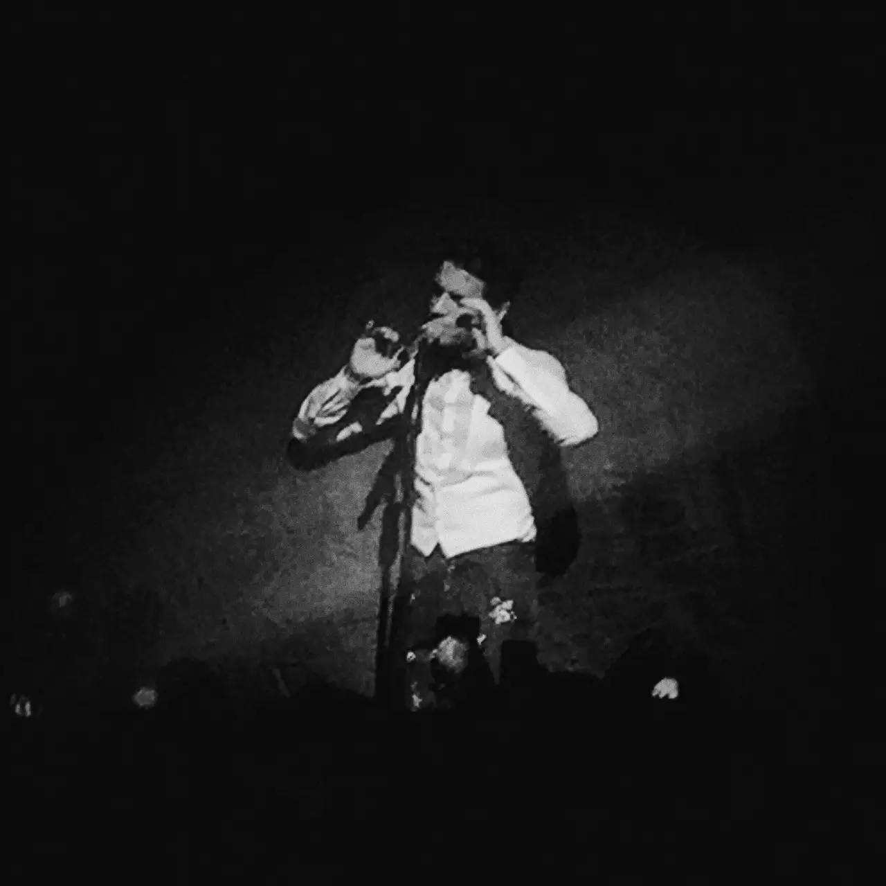
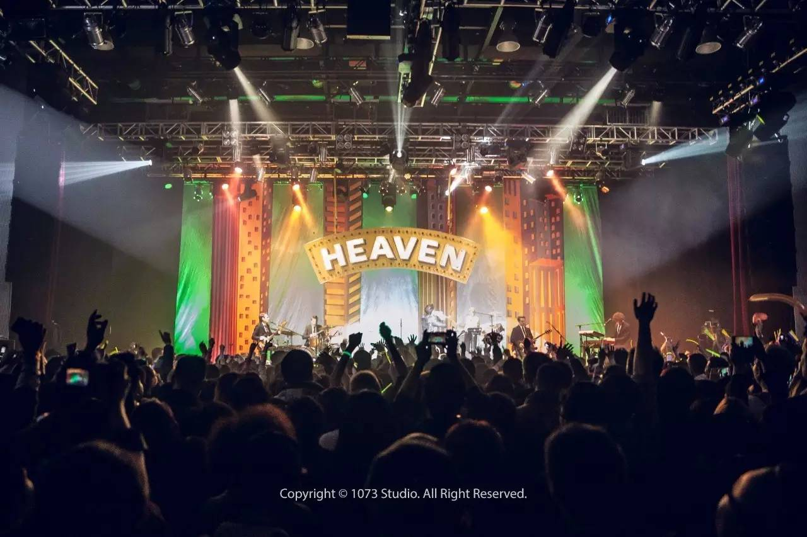

Part1 | 02.25Mika上海演唱会总结
不要再用这么开心的语气讲这么悲伤的故事了好吗qvqqqqq
这是一篇流水账
的第一部分
舍不得一次推完
我要慢慢
回味
~

2月25日晚，我和小伙伴相约上海去见男神Mika。
为了见男神化了美美的妆，去的时候已经比较晚了，外面排着长长的队伍。（我卡real red）

进到场里八点左右，工作人员还在台上走动布置着场地。听着BGM等男神出现等了半个小时左右，Mika穿着礼服慢慢地走上了台。所有人都开始欢呼、尖叫。（应该不是所有人吧，反正我喊了）
然后Mika直接开始唱Porcelain，一束光直接打到他的身上，在后面的幕布上映出他的影子。啊啊啊画面真的超级美啊！啊！啊！

第二首是Talk About You.一开始的部分做了改编，延续了上一首的风格改成了抒情的版本。唱着到副歌部分幕布慢慢拉开露出了后面的Heaven牌子。重新回到Pop，Mika也跳上了钢琴，更强的鼓点和节奏，全场的人都一起跟着跳了起来，双手举过头顶，跟着一起唱了出来I said you’re the only one I wanna talk about~

下一首
一开始的部分Mika自弹自唱，坐在钢琴后面，他！就！是！王！子！同样是到副歌转为Pop，灯光效果变得绚丽，他从座位上站起来，随着旋律扭动身体，唱到最后全场跟着一起喊出了WALK OUT THE DOOR！
这首之前没怎么特别注意过，所以一开始都没反应过来（跪下了，我现在就去听130遍）回去之后仔细看歌词，大概是讲了一个Gay爱着直男兄弟，但是直男的老婆带着孩子跑了，直男过来寻求安慰的故事。现场听着那么欢快的节奏跟着Mika高兴地挥舞手臂，现在再听专辑里的这首歌，尽管节奏再怎么欢快，看着For all these things, another life I'll have to wait这样的歌词，几乎是要流下泪来的。
接下来就有很多新专辑以外的歌了（当然上面的Grace Kelly也不是新专辑里的哦），因为好多没听过我真的差点悔恨地当场跪下qAq。
副歌几乎又是全场大合唱，一边唱一边跳，Mika汗流不止，白衬衫湿了透肉啊啊啊啊啊啊（我死了）后来抱了个小萝莉上台，让她跟着音乐跳舞，因为这首歌就是让女孩子勇敢展现自己的嘛~小萝莉全程一脸蒙逼，感觉都要哭了的那种，后来还是跳了几下，这首歌完了小萝莉下台后Mika说
I think that girl’s life has just been ruined。